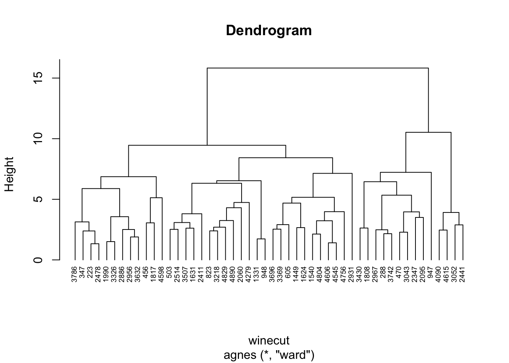
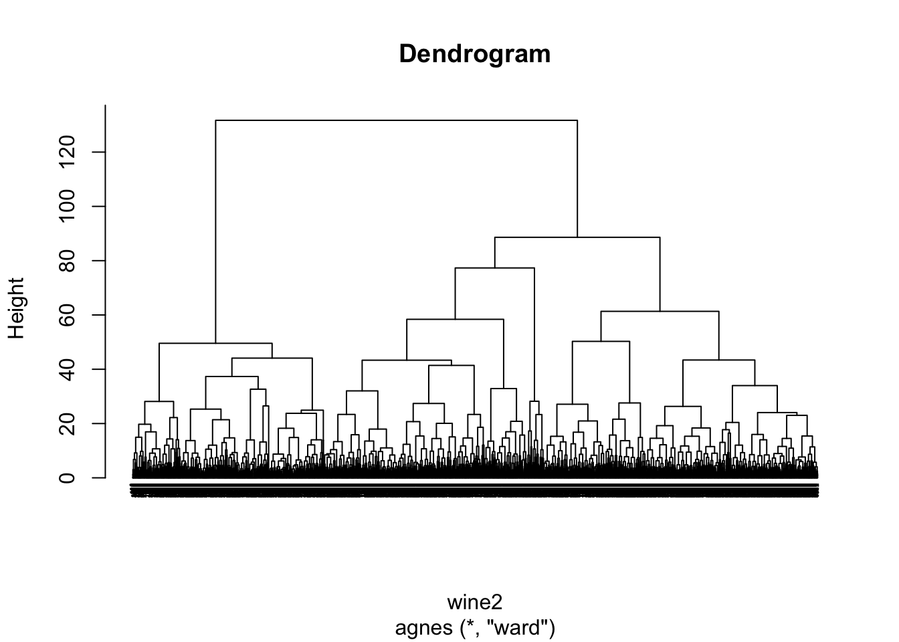
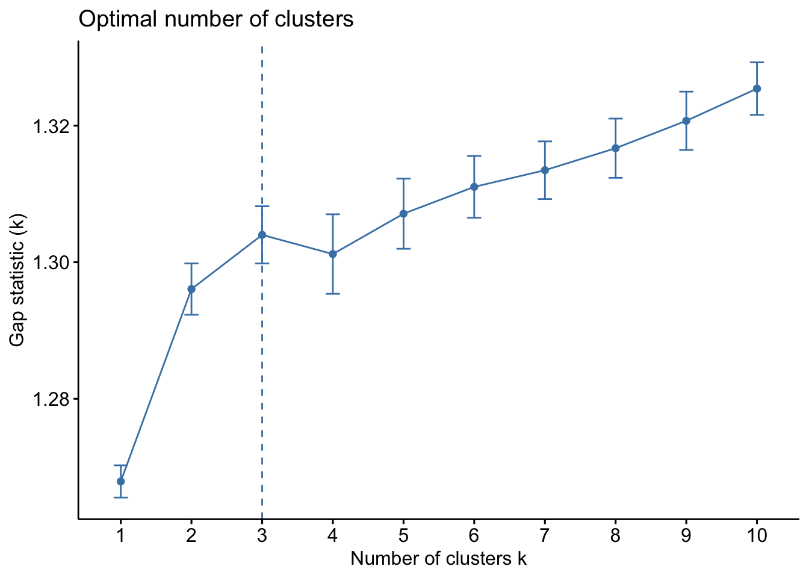
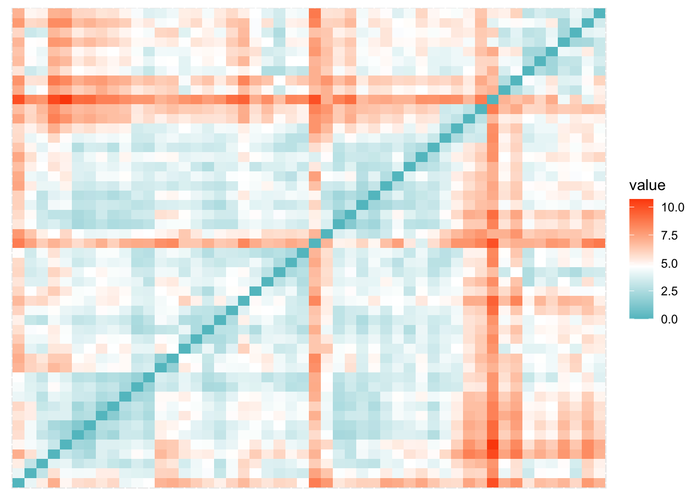
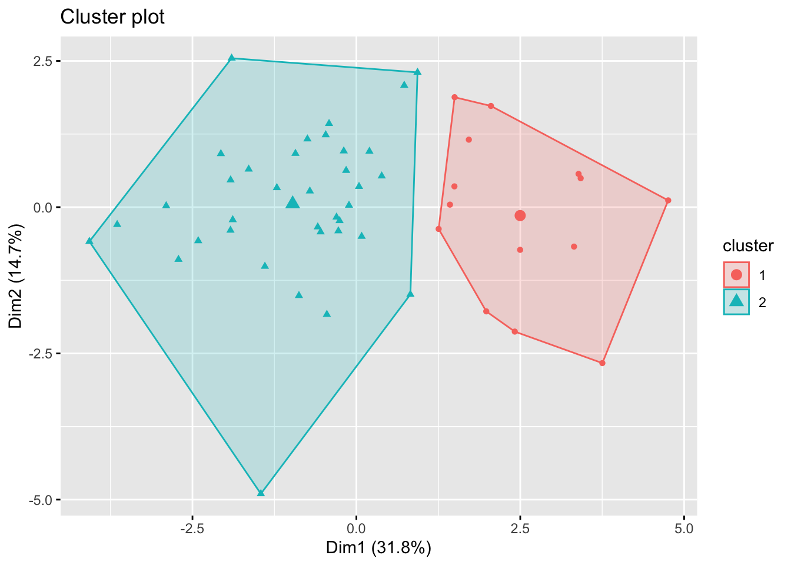
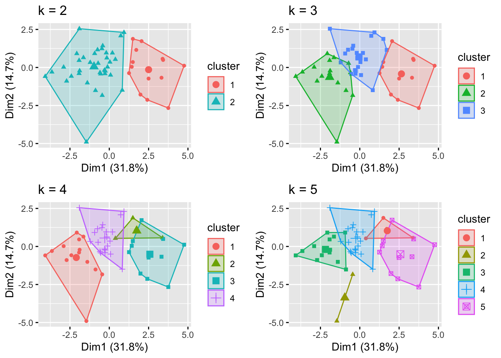
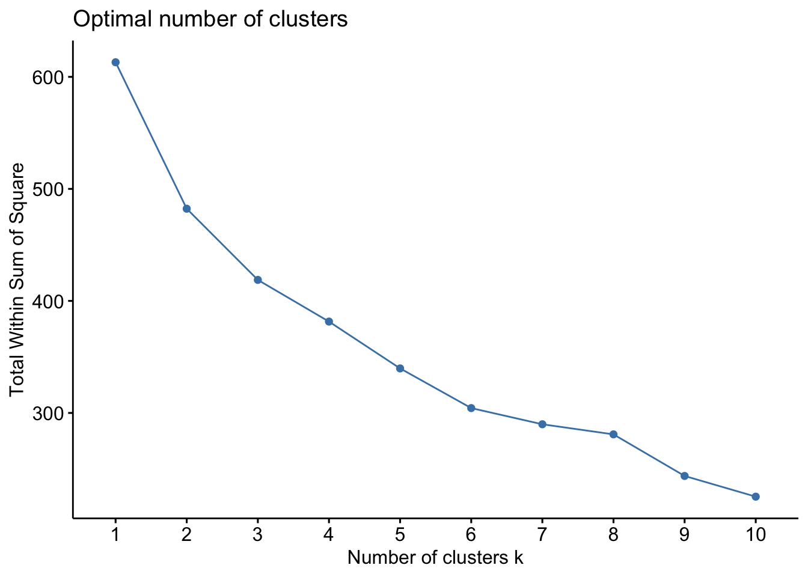

Hierarchical clustering - agnes() function - Different linkages (complete, single, average) - Make a dendrogram
K-means clustering - kmeans() function - Pros and cons
Plotting Dendrogram using dendextend
The data that we’ll work with is the Wine Quality Data Set from the UCI Machine Learning Repository. It consists of 4898 observations of 12 attribute measures based on physiochemical tests:
1 - fixed acidity
2 - volatile acidity
3 - citric acid
4 - residual sugar
5 - chlorides
6 - free sulfur dioxide
7 - total sulfur dioxide
8 - density
9 - pH
10 - sulphates
11 - alcohol
There is one response variable based on sensory data: quality, which is measured by a score between 0 and 10.
We will use the R package cluster, which provide methods for Cluster analysis.
── Conflicts ───────────────────────────────────────── tidymodels_conflicts() ──
✖ purrr::discard() masks scales::discard()
✖ dplyr::filter() masks stats::filter()
✖ dplyr::lag() masks stats::lag()
✖ recipes::step() masks stats::step()
• Search for functions across packages at https://www.tidymodels.org/find/
library(cluster)require(readr)
Loading required package: readr
Attaching package: 'readr'
The following object is masked from 'package:yardstick':
spec
The following object is masked from 'package:scales':
col_factor
require(factoextra)
Loading required package: factoextra
Welcome! Want to learn more? See two factoextra-related books at https://goo.gl/ve3WBa
Hierarchical Clustering
In data mining and statistics, hierarchical clustering is a method of cluster analysis that seeks to build a hierarchy of clusters.
At a closer glance, the observations in our raw data file, winequality-white.csv, are separated by semicolons. We load in our data file in the chunk below, and eliminate any NA values.
We also use the function scale(), which centers and scales the columns of a numeric matrix. By default, its arguments center and scale are both set to TRUE. If center=TRUE, centering is done by subtracting the column means of the data from their corresponding columns. If scale=TRUE, then scaling is done by dividing the (centered) columns of the data by their standard deviations (if center =TRUE). This results in each variable having a mean of 0 and standard deviation of 1.
Hierarchical clustering is a method of clustering that requires a pre-specified number of clusters k. Hierarchical clustering additionally produces a dendrogram, a tree-like representation of the similarity between observations,
It is an unsupervised learning technique to divide a data set into clusters of observations, where each cluster contains observations that are ‘close’ to each other and clusters are ‘far’ from each other by a certain measure.
We will initially begin by using a sample 50 observations from the wine data set to make our visualizations (dendrograms) simpler.
We will use the agnes() function from cluster package in R which computes agglomerative hierarchical clustering of the data. This function has two arguments, data, and method, which is a character string specifying the clustering method:
"average": default method
"single": single linkage
"complete": complete linkage
"ward": Ward’s method
"weighted": weighted average linkage and its generalization "flexible"
"gaverage": a generalized "average"
Since we don’t know beforehand which method will produce the best clusters, we can write a short function below to perform hierarchical clustering using several different methods. The function computes the agglomerative coefficient of each clustering method, which measures the strength of the clusters. The closer this value is to 1, the stronger the clusters are.
Step 1: Find the Linkage Method to Use
We first define the linkage methods we will run through the function, then calculate agglomerative coefficient for each clustering linkage method in the chunk below.
average single complete ward
0.6399131 0.4109914 0.7274697 0.8241716
We can see that Ward’s minimum variance method produces the highest agglomerative coefficient, thus we’ll use that as the method for our final hierarchical clustering, which is performed in the chunk below.
clust <-agnes(winecut, method ="ward")pltree(clust, cex =0.6, hang =-1, main ="Dendrogram")

We have so far only worked with the sample of 50 observations from the original wine2 data set. We now test various linkage methods on the whole wine2 data set in the chunk below and produce a dendrogram based on Ward’s linkage method.
Each leaf at the bottom of the dendrogram represents an observation in the data set. As we move up the dendrogram from the bottom, observations that are similar to each other are fused together into a branch.
We will now find the linkage method for the original data set. Due to the high number of observations within the original data set, the leafs of the dendrogram will be cluttered.
average single complete ward
0.9590064 0.9452671 0.9689056 0.9933460
clust2 <-agnes(wine2, method ="ward") pltree(clust2, cex =0.3, hang =-1, main ="Dendrogram")

Step 2: Determine the Optimal Number of Clusters
We will be calculating the optimal number of clusters on the whole wine2 data set using the gap statistic, which compares the total intra-cluster variation for different values of k with their expected values for a distribution with no clustering, to determine how many clusters the observations should be grouped in
We can calculate the gap statistic for each number of clusters using the clusGap() function from the cluster package along with a plot of Clusters vs. Gap Statistic using the fviz_gap_stat() function
We calculate the gap statistic for each number of clusters (up to 10 clusters) in the code below:
gap_stat <-clusGap(wine2, FUN = hcut, nstart =25, K.max =10, B =50)fviz_gap_stat(gap_stat)

We observe that the gap statistic is highest at k=3 Thus, we select k=3 clusters to divide our data set.
Step 3: Apply cluster labels to original data set
To actually add cluster labels to each observation in our data set, we can use the cutree() method to cut the dendrogram into 3 clusters:
K-means clustering is an unsupervised learning method in machine learning (there is no response variable to evaluate the model off of). This method is used to group data points into K clusters where K is a tuning parameter chosen by the user. After initially randomly assigning data points to a cluster, the model iterates until the clusters are settled into their respective groups. The clustering is determined by the distance from the center of each cluster. The function used for k-means clustering is kmeans() found in the stats package.
Step 1: Pick distance measure
In order to classify observations into clusters, we need to calculate the distance between each pair of observations. Each distance measure will yield different results so it is crucial that you choose these carefully.
The first method I will go over is the distance between two points in Euclidean space, Euclidean Distance:
d(x,y)=\sqrt{\sum_{i=1}^{n} (x_i-y_i)^2}
This method is the most common and will most often be the default distance measure. Euclidean distance is often ideal since it will minimize squared errors, or in the context of K-means, minimize within-cluster variance. Alternatively, there is a close relative we can use: Manhattan Distance:
d(x,y)={\sum_{i=1}^{n} |(x_i-y_i)|}
This distance measure is far less common and should only be used when your data has high dimensionality. Other than these two approaches, you can also use correlation measures such as Pearson correlation distance or Spearman correlation distance. For this data, we will be using the Euclidean Distance.
In order to calculate the Euclidean matrix, we will use the get_dist function from the factoextra package. We can alter the distance measure by changing the method argument.
#Pick distance measure, here I use Euclidean from the factoextra R package #install.packages("factoextra")library(factoextra)#uses euclidean distancedistance <-get_dist(winecut, method ="euclidean")
Now that we have the distances. It may be helpful to visualize them. The below code uses the fviz_dist() function to graph the distances between each subject.
#fviz_dist allows us to visualize the distancefviz_dist(distance, gradient =list(low ="#00AFBB", mid ="white", high ="#FC4E07"),show_labels =FALSE)

Step 2: Creating clusters
As aforementioned, the goal of kmeans clustering is to decrease the inter-cluster variation as much as possible so that the members of each cluster are as similar as possible. In order to do this, we should know that each cluster is represented by the mean of all its points, known as the centroid. The standard way to create clusters is using the Hartigan-Wong algorithm summarized in the following steps:
Partition data into k sets
Randomly assign all of the data points to a centroid and calculate the respective means
For a datapoint d_i select a centroid c_i. Assign d_i to c_i and compute the sum of squared distances. Then, repeat for every every centroid. After, assign d_i to the centroid with the smallest sum. Finally, recalculate the new centroid means.
Repeat step 3 for every data point until convergence
Now that we have an idea of how the algorithm works, we can use it. Here, we are setting centers = 2 to form two different clusters. Additionally, the nstart option will create n initial configurations; the best of which is chosen. In this instance, there are 30 initial configurations, nstart = 30.
kmeans2 <-kmeans(winecut, centers =2, nstart =30) #labeled kmeans 2 since we have 2 clusters. We will use more later
#Below you can see the two clusters, along with the cluster meanskmeans2
This output gives us a lot of important data like the clusters in which each point is allocated, the center of all clusters, etc. As you can see, our wines were separated into clusters of sizes 28 and 22. The sum of squares for cluster 1 is 14913.96 and the sum of squares for cluster 2 is 20172.84. However, it may be easier to just look at a graph
#remember to remove labelsfviz_cluster(kmeans2, data = winecut, geom=c("point"))#ensure geom is only equal to point, otherwise we will have labels

We can see from the graph that there is no overlap between the two clusters which is ideal. However, there seems to be a lot of data points, especially with the second cluster, that are far from the centroid. This leads me to believe we can further increase the number of sets k.
kmeans3 <-kmeans(winecut, centers =3, nstart =30)kmeans4 <-kmeans(winecut, centers =4, nstart =30)kmeans5 <-kmeans(winecut, centers =5, nstart =30)# plots to compare for different ksp1 <-fviz_cluster(kmeans2, geom ="point", data = winecut) +ggtitle("k = 2")p2 <-fviz_cluster(kmeans3, geom ="point", data = winecut) +ggtitle("k = 3")p3 <-fviz_cluster(kmeans4, geom ="point", data = winecut) +ggtitle("k = 4")p4 <-fviz_cluster(kmeans5, geom ="point", data = winecut) +ggtitle("k = 5")library(gridExtra)
Attaching package: 'gridExtra'
The following object is masked from 'package:dplyr':
combine
grid.arrange(p1, p2, p3, p4, nrow =2)

As you can see, with 3 clusters, our data clusters are already begin to overlap with each other. At values k =4 and k = 5, we have clusters with extremely few points. From this, we likely want the number of clusters to be 2 or 3. However, to make sure, there are several methods of finding the optimal amount of clusters.
Step 3: Find optimal amount of clusters
The following methods are useful for aiding you in finding the optimal amount of clusters.
Elbow Method
The elbow method tells us the total within-clusters sum of squares for every cluster c. Ideally, we will choose the part of the graph where an “elbow” shape forms
#So, Which is best? There are three methods we can use #ELBOWfviz_nbclust(winecut, kmeans, method ="wss")

The closest we have to an “elbow” shape on this graph is from k = 2 or k = 3.
Average Silhouette Method
This method determines the quality of clustering, or in other words, how well an object fits inside its cluster. For each k, every data point is given a silhouette coefficient, a score that evaluates how similar a data point is within-cluster compared to out of cluster which is then averaged. We want our optimal cluster to maximize the average silhouette score.
Clustering with k = 2 seems to yield the best results by a rather significant margin. There seems to be large tradeoff between adding more clusters and the average silhouette score.
Gap Statistic Method
This was the previous method used to find the optimal number of clusters in hierarchical clustering. For each value k, the gap statistic finds the difference between the actual within-cluster variation and the expected within-cluster variation (from a random cluster). We want a high gap-statistic.
#GAP STATISTICSgap_stat <-clusGap(winecut, FUN = kmeans, nstart =30,K.max =10, B =50)print(gap_stat, method ="firstmax")#first max givesuse the location of the first local maximum
According to this method, the optimal amount of clusters is 1; however, this is rather impractical for the sake of our analysis. Because both of the previous optimization methods suggested k = 2, that will be the final amount of clusters we will use.
final <-kmeans(winecut, centers =2, nstart =30) #labeled kmeans 2 since we have 2 clusters. We will use more laterfviz_cluster(final, data = winecut, geom=c("point"))